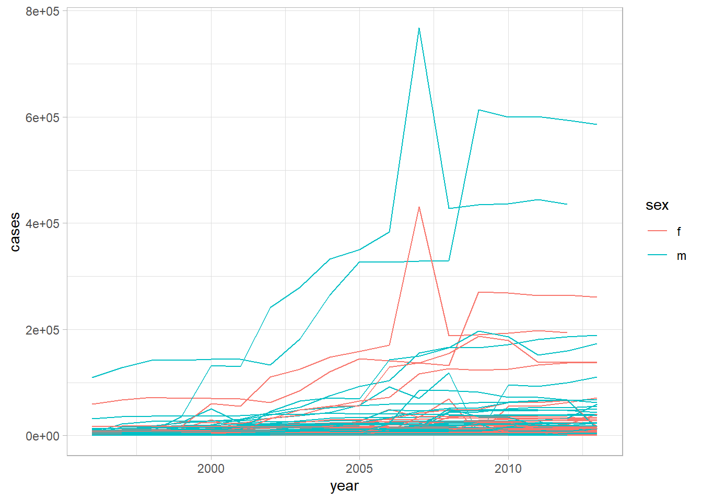

4 Tidy
4.1 Datos
Vamos a trabajar con unos datasets sencillos que recopilan la misma información sobre 4 variables: país (country), año (year), población (population) y casos (cases) de Tuberculosis (TB). ¿Puedes identificar cuál de ellos está en forma tidy?
library(tidyverse)
table1## # A tibble: 6 x 4
## country year cases population
## <chr> <int> <int> <int>
## 1 Afghanistan 1999 745 19987071
## 2 Afghanistan 2000 2666 20595360
## 3 Brazil 1999 37737 172006362
## 4 Brazil 2000 80488 174504898
## 5 China 1999 212258 1272915272
## 6 China 2000 213766 1280428583table2## # A tibble: 12 x 4
## country year type count
## <chr> <int> <chr> <int>
## 1 Afghanistan 1999 cases 745
## 2 Afghanistan 1999 population 19987071
## 3 Afghanistan 2000 cases 2666
## 4 Afghanistan 2000 population 20595360
## 5 Brazil 1999 cases 37737
## 6 Brazil 1999 population 172006362
## 7 Brazil 2000 cases 80488
## 8 Brazil 2000 population 174504898
## 9 China 1999 cases 212258
## 10 China 1999 population 1272915272
## 11 China 2000 cases 213766
## 12 China 2000 population 1280428583table3## # A tibble: 6 x 3
## country year rate
## * <chr> <int> <chr>
## 1 Afghanistan 1999 745/19987071
## 2 Afghanistan 2000 2666/20595360
## 3 Brazil 1999 37737/172006362
## 4 Brazil 2000 80488/174504898
## 5 China 1999 212258/1272915272
## 6 China 2000 213766/1280428583table4a## # A tibble: 3 x 3
## country `1999` `2000`
## * <chr> <int> <int>
## 1 Afghanistan 745 2666
## 2 Brazil 37737 80488
## 3 China 212258 213766table4b## # A tibble: 3 x 3
## country `1999` `2000`
## * <chr> <int> <int>
## 1 Afghanistan 19987071 20595360
## 2 Brazil 172006362 174504898
## 3 China 1272915272 12804285834.2 Pivotar
Generalmente, para ordenar tus datos (tidying) tendrás que seguir 2 pasos básicos:
Identificar qué es variable (lo que irá en las columnas) y qué es observación (lo que irá en las filas);
Resolver una de estas situaciones:
- Las variables podrían estar distribuidas en varias columnas
- Las observaciones podrían estar distribuidas en varias filas
- Ambas a la vez :(
Esto lo resolveremos con las funciones pivot_longer() y pivot_wider().
4.2.1 Pivot longer
Cuando nuestro dataset tiene por columnas los valores de una variable, usamos pivot_longer(). La table4a es un caso claro de esta situación: tenemos dos columnas con nombre 1990 y 2000, que corresponden a valores de la variable year. El proceso para hacerlos tidy pasa por arreglar estas columnas creando dos nuevas variables: year y cases:
table4a %>%
pivot_longer(c(`1999`, `2000`), names_to = "year", values_to = "cases")## # A tibble: 6 x 3
## country year cases
## <chr> <chr> <int>
## 1 Afghanistan 1999 745
## 2 Afghanistan 2000 2666
## 3 Brazil 1999 37737
## 4 Brazil 2000 80488
## 5 China 1999 212258
## 6 China 2000 213766De forma similar, podemos arreglar table4b:
table4b %>%
pivot_longer(c(`1999`, `2000`), names_to = "year", values_to = "population")## # A tibble: 6 x 3
## country year population
## <chr> <chr> <int>
## 1 Afghanistan 1999 19987071
## 2 Afghanistan 2000 20595360
## 3 Brazil 1999 172006362
## 4 Brazil 2000 174504898
## 5 China 1999 1272915272
## 6 China 2000 1280428583Finalmente, si queremos unir ambos resultados, podemos usar left_join, que ya estudiaremos con los Datos relacionales:
tidy4a <- table4a %>%
pivot_longer(c(`1999`, `2000`), names_to = "year", values_to = "cases")
tidy4b <- table4b %>%
pivot_longer(c(`1999`, `2000`), names_to = "year", values_to = "population")
left_join(tidy4a, tidy4b)## Joining, by = c("country", "year")## # A tibble: 6 x 4
## country year cases population
## <chr> <chr> <int> <int>
## 1 Afghanistan 1999 745 19987071
## 2 Afghanistan 2000 2666 20595360
## 3 Brazil 1999 37737 172006362
## 4 Brazil 2000 80488 174504898
## 5 China 1999 212258 1272915272
## 6 China 2000 213766 12804285834.2.2 Pivot wider
Lo opuesto a alargar un dataset es hacerlo más ancho. Por tanto, es de entender que con pivot_wider() crearemos más columnas. Si prestamos atención a la table2 notaremos que cada observación a sido expandida en dos filas que recogen los casos y la población. Esto lo solucionamos creando dos nuevas variables (columnas) para los casos y la población:
table2 %>%
pivot_wider(names_from = type, values_from = count)## # A tibble: 6 x 4
## country year cases population
## <chr> <int> <int> <int>
## 1 Afghanistan 1999 745 19987071
## 2 Afghanistan 2000 2666 20595360
## 3 Brazil 1999 37737 172006362
## 4 Brazil 2000 80488 174504898
## 5 China 1999 212258 1272915272
## 6 China 2000 213766 12804285834.2.3 Ejercicios
- Aunque opuestas, no son perfectamente simétricas. ¿Puedes deducir por qué?
stocks <- tibble(
year = c(2015, 2015, 2016, 2016),
half = c( 1, 2, 1, 2),
return = c(1.88, 0.59, 0.92, 0.17)
)
stocks## # A tibble: 4 x 3
## year half return
## <dbl> <dbl> <dbl>
## 1 2015 1 1.88
## 2 2015 2 0.59
## 3 2016 1 0.92
## 4 2016 2 0.17stocks %>%
pivot_wider(names_from = year, values_from = return) %>%
pivot_longer(`2015`:`2016`, names_to = "year", values_to = "return")## # A tibble: 4 x 3
## half year return
## <dbl> <chr> <dbl>
## 1 1 2015 1.88
## 2 1 2016 0.92
## 3 2 2015 0.59
## 4 2 2016 0.17R/
Al usar wider pasamos los años a nombres de columnas (de enteros a caracteres). Luego con longer leemos los años como caracteres.
- Intenta arreglarlo usando el argumento
names_transform = list(year = as.numeric ).
R/
stocks %>%
pivot_wider(names_from = year, values_from = return) %>%
pivot_longer(`2015`:`2016`, names_to = "year", values_to = "return",
names_transform = list(year = as.numeric )) %>%
select(year, half, return) %>%
arrange(year)## # A tibble: 4 x 3
## year half return
## <dbl> <dbl> <dbl>
## 1 2015 1 1.88
## 2 2015 2 0.59
## 3 2016 1 0.92
## 4 2016 2 0.17- ¿Por qué esto no funciona?
table4a %>%
pivot_longer(c(1999, 2000), names_to = "year", values_to = "cases")R/
Las columnas (variables) son caracteres, por tanto debemos usar:
table4a %>%
pivot_longer(c(`1999`, `2000`), names_to = "year", values_to = "cases")- ¿Qué pasa si ampliamos esta tabla?
people <- tribble(
~name, ~names, ~values,
#-----------------|--------|------
"Phillip Woods", "age", 45,
"Phillip Woods", "height", 186,
"Phillip Woods", "age", 50,
"Jessica Cordero", "age", 37,
"Jessica Cordero", "height", 156
)R/
pivot_wider(people, names_from="name", values_from = "values")## Warning: Values are not uniquely identified; output will contain list-cols.
## * Use `values_fn = list` to suppress this warning.
## * Use `values_fn = length` to identify where the duplicates arise
## * Use `values_fn = {summary_fun}` to summarise duplicates## # A tibble: 2 x 3
## names `Phillip Woods` `Jessica Cordero`
## <chr> <list> <list>
## 1 age <dbl [2]> <dbl [1]>
## 2 height <dbl [1]> <dbl [1]>La opción de arriba no nos vale porque name no identifica de forma única a cada fila. Si pasamos los nombres a las columnas:
people %>%
group_by(name, names) %>%
mutate(obs = row_number()) %>%
pivot_wider(names_from = "name", values_from = "values")## # A tibble: 3 x 4
## # Groups: names [2]
## names obs `Phillip Woods` `Jessica Cordero`
## <chr> <int> <dbl> <dbl>
## 1 age 1 45 37
## 2 height 1 186 156
## 3 age 2 50 NAObservamos que algunos outliers implícitos son ahora explícitos.
4.3 Separar y unir
La table3 tiene una columna rate con los casos y la población. Evidentemente, esta proporción no es realmente útil porque no está calculada. Con separate() podemos “partirla” en dos nuevas columnas con la información que deseamos:
table3 %>%
separate(rate, into = c("cases", "population"))## # A tibble: 6 x 4
## country year cases population
## <chr> <int> <chr> <chr>
## 1 Afghanistan 1999 745 19987071
## 2 Afghanistan 2000 2666 20595360
## 3 Brazil 1999 37737 172006362
## 4 Brazil 2000 80488 174504898
## 5 China 1999 212258 1272915272
## 6 China 2000 213766 1280428583Automáticamente, la función separa los datos cuando encuentra algún caracter no alfanumérico. Esto se puede personalizar:
table3 %>%
separate(rate, into = c("cases", "population"), sep = "/")## # A tibble: 6 x 4
## country year cases population
## <chr> <int> <chr> <chr>
## 1 Afghanistan 1999 745 19987071
## 2 Afghanistan 2000 2666 20595360
## 3 Brazil 1999 37737 172006362
## 4 Brazil 2000 80488 174504898
## 5 China 1999 212258 1272915272
## 6 China 2000 213766 1280428583Habrás notado que al separar convierte las nuevas a variables a tipo character. Para lidiar con esto, podemos decirle a separate que encuentre el tipo de datos correspondiente a cada caso:
table3 %>%
separate(rate, into = c("cases", "population"), convert = TRUE)## # A tibble: 6 x 4
## country year cases population
## <chr> <int> <int> <int>
## 1 Afghanistan 1999 745 19987071
## 2 Afghanistan 2000 2666 20595360
## 3 Brazil 1999 37737 172006362
## 4 Brazil 2000 80488 174504898
## 5 China 1999 212258 1272915272
## 6 China 2000 213766 1280428583También podemos separar enteros si proporcionamos el número de dígitos a separar:
table3 %>%
separate(year, into = c("first_3", "last_digit"), sep = -1) %>%
separate(rate, into = c("cases", "population"), convert = TRUE)## # A tibble: 6 x 5
## country first_3 last_digit cases population
## <chr> <chr> <chr> <int> <int>
## 1 Afghanistan 199 9 745 19987071
## 2 Afghanistan 200 0 2666 20595360
## 3 Brazil 199 9 37737 172006362
## 4 Brazil 200 0 80488 174504898
## 5 China 199 9 212258 1272915272
## 6 China 200 0 213766 1280428583table3 %>%
separate(year, into = c("century", "year"), sep = 2) %>%
separate(rate, into = c("cases", "population"), convert = TRUE)## # A tibble: 6 x 5
## country century year cases population
## <chr> <chr> <chr> <int> <int>
## 1 Afghanistan 19 99 745 19987071
## 2 Afghanistan 20 00 2666 20595360
## 3 Brazil 19 99 37737 172006362
## 4 Brazil 20 00 80488 174504898
## 5 China 19 99 212258 1272915272
## 6 China 20 00 213766 1280428583Con unite() hacemos justamente lo contrario, especificando el separador (por defecto será _) que en este caso será un espacio en blanco:
table5 %>%
unite(new, century, year, sep = "")## # A tibble: 6 x 3
## country new rate
## <chr> <chr> <chr>
## 1 Afghanistan 1999 745/19987071
## 2 Afghanistan 2000 2666/20595360
## 3 Brazil 1999 37737/172006362
## 4 Brazil 2000 80488/174504898
## 5 China 1999 212258/1272915272
## 6 China 2000 213766/12804285834.3.1 Ejercicios
- Experimenta con los argumentos
extrayfilldeseparate(), usando estos datos:
tibble(x = c("a,b,c", "d,e,f,g", "h,i,j")) %>%
separate(x, c("one", "two", "three"))## Warning: Expected 3 pieces. Additional pieces discarded in 1 rows [2].## # A tibble: 3 x 3
## one two three
## <chr> <chr> <chr>
## 1 a b c
## 2 d e f
## 3 h i jtibble(x = c("a,b,c", "d,e", "f,g,i")) %>%
separate(x, c("one", "two", "three"))## Warning: Expected 3 pieces. Missing pieces filled with `NA` in 1 rows [2].## # A tibble: 3 x 3
## one two three
## <chr> <chr> <chr>
## 1 a b c
## 2 d e <NA>
## 3 f g iR/
El argumento extra le dice a separate() qué hacer si hay muchos elementos. Por defecto, los valores extra son descartados con un Warning, como habrás notado en los códigos arriba. Por ejemplo, si usamos extra = "merge" podemos retener los elementos adicionales que no puedan ser separados en solo 3 columnas:
tibble(x = c("a,b,c", "d,e,f,g", "h,i,j")) %>%
separate(x, c("one", "two", "three"), extra = "merge")## # A tibble: 3 x 3
## one two three
## <chr> <chr> <chr>
## 1 a b c
## 2 d e f,g
## 3 h i jPor otro lado, fill rellena los espacios en blanco de acuerdo al criterio que se fije. Por defecto, rellena con NA si no hay suficientes elementos como para separar en la cantidad de columnas que hemos pedido. Podemos variar este comportamiento con los argumentos fill = "left" (rellenar a la izquierda con NAs) o fill = "right" (rellenar a la derecha con NAs), sin emitir Warnings:
tibble(x = c("a,b,c", "d,e", "f,g,i")) %>%
separate(x, c("one", "two", "three"), fill = "left")## # A tibble: 3 x 3
## one two three
## <chr> <chr> <chr>
## 1 a b c
## 2 <NA> d e
## 3 f g itibble(x = c("a,b,c", "d,e", "f,g,i")) %>%
separate(x, c("one", "two", "three"), fill = "right")## # A tibble: 3 x 3
## one two three
## <chr> <chr> <chr>
## 1 a b c
## 2 d e <NA>
## 3 f g i4.4 Lidiar con los datos faltantes
Habrás notado que al cambiar la forma en que presentamos los datos, pueden aparecer valores perdidos (NAs). Estos perdidos pueden ser de dos formas:
- Explícitos, cuando vemos un
NAen los datos. - Implícitos, cuando no están presentes en los datos.
¿Podrías identificarlos aquí? R/ Explícito es el valor de return en el cuatrimestre 4 del 2015. Implícito el caso del 1er cuatrimestre del 2016.
stocks <- tibble(
year = c(2015, 2015, 2015, 2015, 2016, 2016, 2016),
qtr = c( 1, 2, 3, 4, 2, 3, 4),
return = c(1.88, 0.59, 0.35, NA, 0.92, 0.17, 2.66)
)Observa cómo los implícitos pasan a ser explícitos:
stocks %>%
pivot_wider(names_from = year, values_from = return)## # A tibble: 4 x 3
## qtr `2015` `2016`
## <dbl> <dbl> <dbl>
## 1 1 1.88 NA
## 2 2 0.59 0.92
## 3 3 0.35 0.17
## 4 4 NA 2.66Si hacemos la operación inversa con pivot_longer(), tal vez no deseamos que esos perdidos aparezcan de forma explícita:
stocks %>%
pivot_wider(names_from = year, values_from = return) %>%
pivot_longer(
cols = c(`2015`, `2016`),
names_to = "year",
values_to = "return",
values_drop_na = TRUE
)## # A tibble: 6 x 3
## qtr year return
## <dbl> <chr> <dbl>
## 1 1 2015 1.88
## 2 2 2015 0.59
## 3 2 2016 0.92
## 4 3 2015 0.35
## 5 3 2016 0.17
## 6 4 2016 2.66Por otro lado, si queremos que los perdidos implícitos aparezcan de forma explícita (sí, ¡vaya lío!):
stocks %>%
complete(year, qtr)## # A tibble: 8 x 3
## year qtr return
## <dbl> <dbl> <dbl>
## 1 2015 1 1.88
## 2 2015 2 0.59
## 3 2015 3 0.35
## 4 2015 4 NA
## 5 2016 1 NA
## 6 2016 2 0.92
## 7 2016 3 0.17
## 8 2016 4 2.664.4.1 Ejercicios
- Otra función interesante es
fill. ¿Puedes entender cómo funciona a partir de este ejemplo?
treatment <- tribble(
~ person, ~ treatment, ~response,
"Derrick Whitmore", 1, 7,
NA, 2, 10,
NA, 3, 9,
"Katherine Burke", 1, 4
)
treatment## # A tibble: 4 x 3
## person treatment response
## <chr> <dbl> <dbl>
## 1 Derrick Whitmore 1 7
## 2 <NA> 2 10
## 3 <NA> 3 9
## 4 Katherine Burke 1 4treatment %>%
fill(person)## # A tibble: 4 x 3
## person treatment response
## <chr> <dbl> <dbl>
## 1 Derrick Whitmore 1 7
## 2 Derrick Whitmore 2 10
## 3 Derrick Whitmore 3 9
## 4 Katherine Burke 1 4R/ Rellena los faltantes con el valor no faltante anterior.
- ¿Para qué sirve el argumento
directiondefill()?
R/
Te permite escoger con cuál valor rellenar. Por ejemplo, tomando el siguiente valor:
treatment %>%
fill(person, .direction = "up")## # A tibble: 4 x 3
## person treatment response
## <chr> <dbl> <dbl>
## 1 Derrick Whitmore 1 7
## 2 Katherine Burke 2 10
## 3 Katherine Burke 3 9
## 4 Katherine Burke 1 44.5 Case study
Vamos con unos datos reales. En este caso, usaremos el dataset who de dplyr, con información sobre el número de casos de TB en el 2014, proporcionados por la Organización Mundial de la Salud (OMS, o WHO en inglés).
data("who")El primer paso es crear una nueva columna auxiliar para agrupar las categorías new_sp_m014 a new_rel_f65, que no parecen ser variables:
who1 <- who %>%
pivot_longer(
cols = new_sp_m014:newrel_f65,
names_to = "key",
values_to = "cases",
values_drop_na = TRUE
)
who1## # A tibble: 76,046 x 6
## country iso2 iso3 year key cases
## <chr> <chr> <chr> <int> <chr> <int>
## 1 Afghanistan AF AFG 1997 new_sp_m014 0
## 2 Afghanistan AF AFG 1997 new_sp_m1524 10
## 3 Afghanistan AF AFG 1997 new_sp_m2534 6
## 4 Afghanistan AF AFG 1997 new_sp_m3544 3
## 5 Afghanistan AF AFG 1997 new_sp_m4554 5
## 6 Afghanistan AF AFG 1997 new_sp_m5564 2
## 7 Afghanistan AF AFG 1997 new_sp_m65 0
## 8 Afghanistan AF AFG 1997 new_sp_f014 5
## 9 Afghanistan AF AFG 1997 new_sp_f1524 38
## 10 Afghanistan AF AFG 1997 new_sp_f2534 36
## # ... with 76,036 more rowsAntes de separar la columna key, de acuerdo a la información consultada en la ayuda ?who, tenemos que lidiar con unos typos muy difíciles de observar: hay cierta inconsistencia entre new_rel y newrel. Para resolver esto, solo tenemos que emplear una de las funciones de stringr… Arréglalo y guarda los datos en un nuevo tibble who2.
who2 <- who1 %>%
mutate(key = stringr::str_replace(key, "newrel", "new_rel"))
who2## # A tibble: 76,046 x 6
## country iso2 iso3 year key cases
## <chr> <chr> <chr> <int> <chr> <int>
## 1 Afghanistan AF AFG 1997 new_sp_m014 0
## 2 Afghanistan AF AFG 1997 new_sp_m1524 10
## 3 Afghanistan AF AFG 1997 new_sp_m2534 6
## 4 Afghanistan AF AFG 1997 new_sp_m3544 3
## 5 Afghanistan AF AFG 1997 new_sp_m4554 5
## 6 Afghanistan AF AFG 1997 new_sp_m5564 2
## 7 Afghanistan AF AFG 1997 new_sp_m65 0
## 8 Afghanistan AF AFG 1997 new_sp_f014 5
## 9 Afghanistan AF AFG 1997 new_sp_f1524 38
## 10 Afghanistan AF AFG 1997 new_sp_f2534 36
## # ... with 76,036 more rowsAhora vamos a hacer dos pases de separate() . Primero, separamos todo lo que esté unido por _:
who3 <- who2 %>%
separate(key, c("new", "type", "sexage"), sep = "_")
who3## # A tibble: 76,046 x 8
## country iso2 iso3 year new type sexage cases
## <chr> <chr> <chr> <int> <chr> <chr> <chr> <int>
## 1 Afghanistan AF AFG 1997 new sp m014 0
## 2 Afghanistan AF AFG 1997 new sp m1524 10
## 3 Afghanistan AF AFG 1997 new sp m2534 6
## 4 Afghanistan AF AFG 1997 new sp m3544 3
## 5 Afghanistan AF AFG 1997 new sp m4554 5
## 6 Afghanistan AF AFG 1997 new sp m5564 2
## 7 Afghanistan AF AFG 1997 new sp m65 0
## 8 Afghanistan AF AFG 1997 new sp f014 5
## 9 Afghanistan AF AFG 1997 new sp f1524 38
## 10 Afghanistan AF AFG 1997 new sp f2534 36
## # ... with 76,036 more rowsAntes del segundo pase, elimina lo que no te interesa: new, iso2 e iso3. Cuando lo hayas hecho, guarda los nuevos datos en who4, y hacemos al segundo separate() para obtener el sexo y rangos de edades por separado:
who4 <- who3 %>%
select(-new, -iso2, -iso3)who5 <- who4 %>%
separate(sexage, c("sex", "age"), sep = 1)
who5## # A tibble: 76,046 x 6
## country year type sex age cases
## <chr> <int> <chr> <chr> <chr> <int>
## 1 Afghanistan 1997 sp m 014 0
## 2 Afghanistan 1997 sp m 1524 10
## 3 Afghanistan 1997 sp m 2534 6
## 4 Afghanistan 1997 sp m 3544 3
## 5 Afghanistan 1997 sp m 4554 5
## 6 Afghanistan 1997 sp m 5564 2
## 7 Afghanistan 1997 sp m 65 0
## 8 Afghanistan 1997 sp f 014 5
## 9 Afghanistan 1997 sp f 1524 38
## 10 Afghanistan 1997 sp f 2534 36
## # ... with 76,036 more rows4.5.1 Ejercicios
- Escribe todas las transformaciones con un único pipe.
R/
who_piped <- who %>%
pivot_longer(
cols = new_sp_m014:newrel_f65,
names_to = "key",
values_to = "cases",
values_drop_na = TRUE
) %>%
mutate(
key = stringr::str_replace(key, "newrel", "new_rel")
) %>%
separate(key, c("new", "var", "sexage")) %>%
select(-new, -iso2, -iso3) %>%
separate(sexage, c("sex", "age"), sep = 1)- Para cada país, año y sexo calcula el número total de casos de TB. Haz un plot de los resultados, de la forma que consideres más informativa.
R/
who5 %>%
group_by(country, year, sex) %>%
filter(year > 1995) %>%
summarise(cases = sum(cases)) %>%
unite(country_sex, country, sex, remove = FALSE) %>%
ggplot(aes(x = year, y = cases, group = country_sex, colour = sex)) +
geom_line() +
theme_light()## `summarise()` has grouped output by 'country', 'year'. You can override using the `.groups` argument.